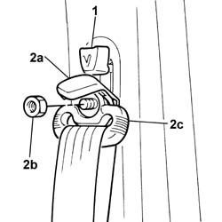
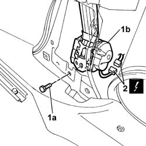

7065A04 PRETENSIONER CONTROL UNIT - R.R.
- Path
- Procedures > 70 FITTINGS > 7065 SEAT BELTS AND ACCESSORIES > 7065A FRONT SEAT BELTS > 7065A04 PRETENSIONER CONTROL UNIT - R.R.
- Kind
- repair procedure (removal / refitting; the operation number is the code)
- Applies to
- all engines; all production periods
- Interactive page
- https://sloeber94.github.io/elrnDB-fDbl/en/#/2585225
Applies to: all engines; all production periods
 Removing
Removing
 Refitting
RefittingDisconnect the battery negative terminal.
Op. 7040L40 FRONT DOOR HOUSING RUNNING BOARD (ONE), LEFT OR RIGHT - R.R.
Op. 7040L44 REAR DOOR HOUSING RUNNING BOARD (ONE), LEFT OR RIGHT - R.R.
Op. 7040H36 CENTRE PILLAR LOWER ELEMENT (ONE), LEFT OR RIGHT - R.R
1. Prise out the seat belt height adjuster knob.
2. Open plastic protection (2a), undo retaining nut (2b) and place front seat belt upper link (2c) to one side.

Applies to: all engines; all production periods
1. Undo the bolt (1a) and remove the front seat belt reel (1b) from its seating.
2. Disconnect the electrical connector.
 | Name | Connector |
|---|---|---|
2 | Driver's seat belt pre-tensioner |
| Name | Connector |
|---|---|---|
2 | Front passenger seat belt pre-tensioner |

Applies to: all engines; all production periods
Refitting
RemovingFit the reel and tighten the bolt to torque.
 | Fastening | Component | Ø | Value (daNm) |
|---|---|---|---|---|
- | Side bolt | ENGINE OR ROD ANCHORAGE BEAM | M12 | (Bodyshell) 10.2 ÷ 12.6 |
Fit the upper front seat belt link and secure to the height adjuster by tightening the nut to torque.
| Fastening | Component | Ø | Value (daNm) |
|---|---|---|---|---|
- | Nut | POWER STEERNG BOX LINKS | M14 | (Wheel damper side) 2.9 ÷ 3.6 |
Close the front seat belt upper link nut plastic protection.
Fit the seat belt height adjuster knob.
Op. 7040H36 CENTRE PILLAR LOWER ELEMENT (ONE), LEFT OR RIGHT - R.R
Op. 7040L44 REAR DOOR HOUSING RUNNING BOARD (ONE), LEFT OR RIGHT - R.R.
Op. 7040L40 FRONT DOOR HOUSING RUNNING BOARD (ONE), LEFT OR RIGHT - R.R.
Connect the battery negative terminal.
Topics linked from this page (5)
- 7040H36 central trim lower element - r r
- 7040L40 front compartment scuff strip - r r
- 7040L44 rear compartment scuff strip - r r
- Q20 DRIVER'S SEAT BELT PRE-TENSIONER ( REAR )
- Q21 FRONT PASSENGER SEAT BELT PRE-TENSIONER ( REAR )